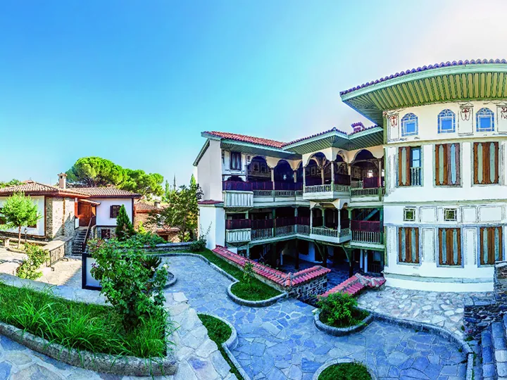
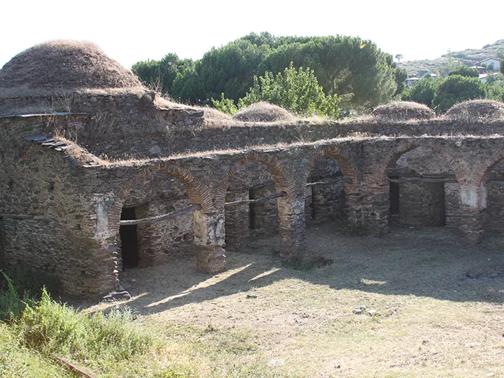
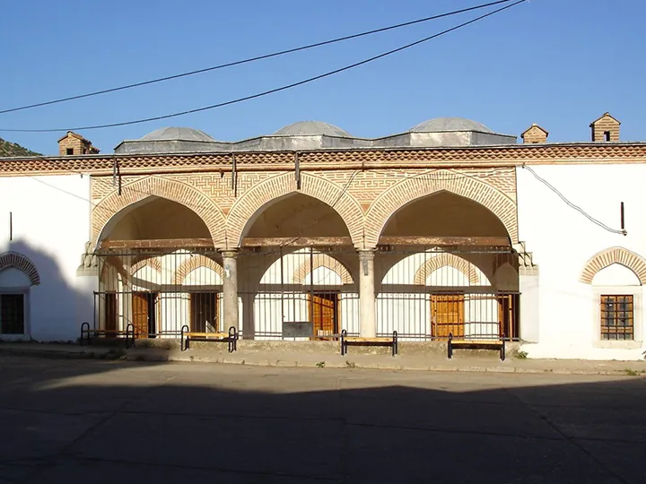
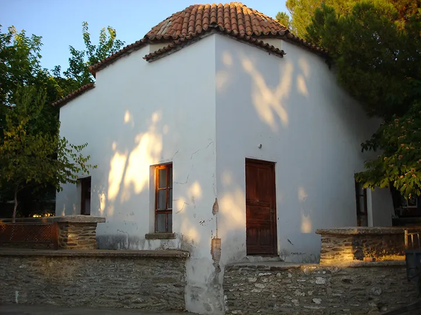
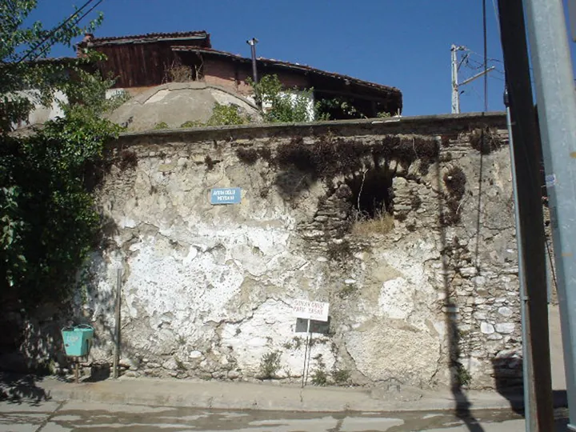
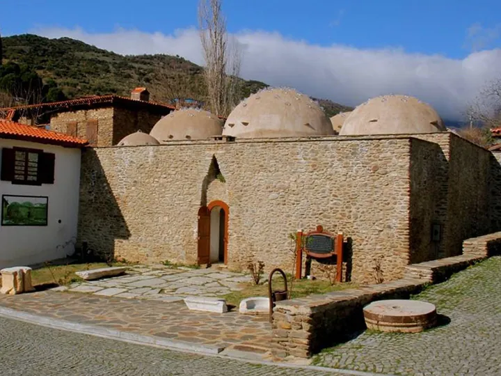
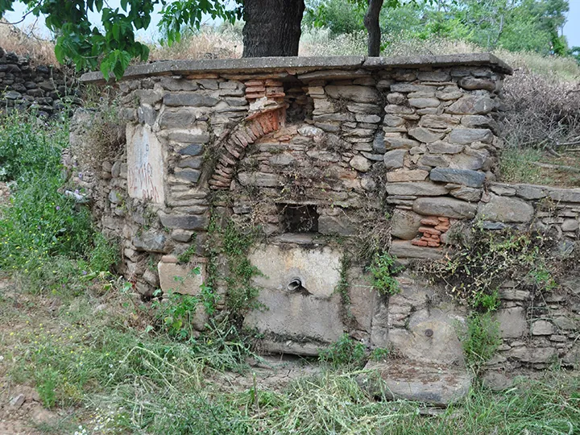
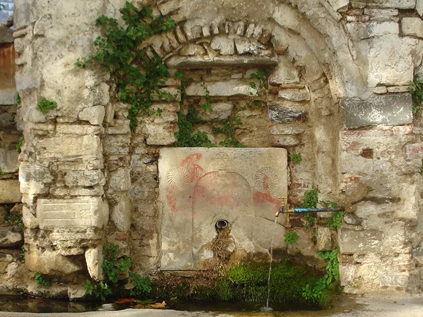
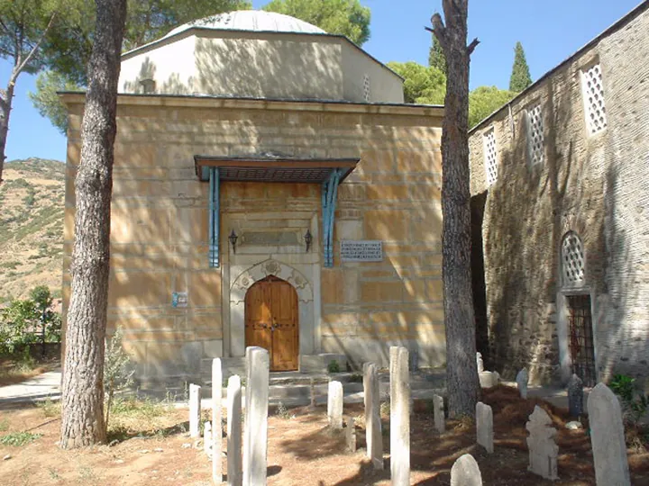
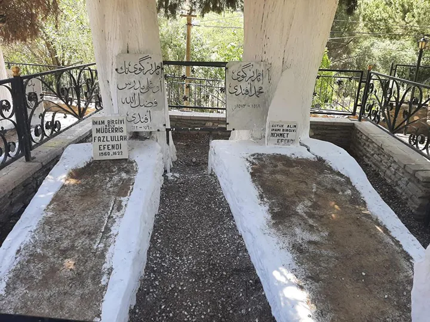
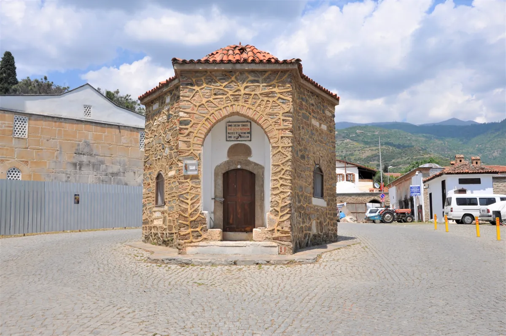
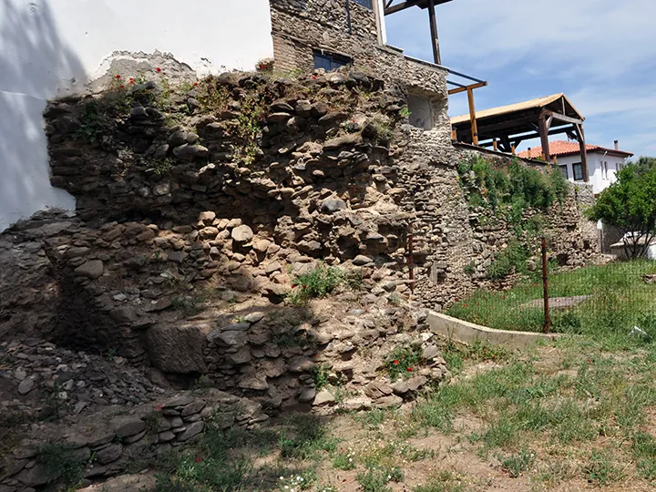

 Kadılar Paşazade Konağı
Kadılar Paşazade Konağı Kerimağa Konağı
Kerimağa Konağı Sandıkoğlu Konağı
Sandıkoğlu Konağı Tevfik Bey Konağı
Tevfik Bey Konağı Kale Medresesi
Kale Medresesi Dervişağa Camii
Dervişağa Camii Karaoğlu Camii
Karaoğlu Camii Ulu Cami
Ulu Cami Sasalı Hamamı
Sasalı Hamamı Bıçakçı Çeşmesi
Bıçakçı Çeşmesi Çinili Çeşme
Çinili Çeşme Şefik Bey Hanı Çeşmesi
Şefik Bey Hanı Çeşmesi Hızır Paşa Mezarı
Hızır Paşa Mezarı ÇEKÜL Evi
ÇEKÜL Evi Demirli Mağaza
Demirli Mağaza Dokuma Atölyesi
Dokuma Atölyesi Evliya Çelebi Evi
Evliya Çelebi Evi Gazi Umur Bey Heykeli
Gazi Umur Bey Heykeli Güdük Minare Mescidi
Güdük Minare Mescidi Hızır Paşa Anıtı
Hızır Paşa Anıtı İmam-ı Birgivi Mescidi
İmam-ı Birgivi Mescidi Karakol Binası
Karakol Binası Küp Uçuranlar Kulesi
Küp Uçuranlar Kulesi Su Kemeri
Su Kemeri Su Terazisi
Su Terazisi Tabakhane Kalıntıları
Tabakhane Kalıntıları